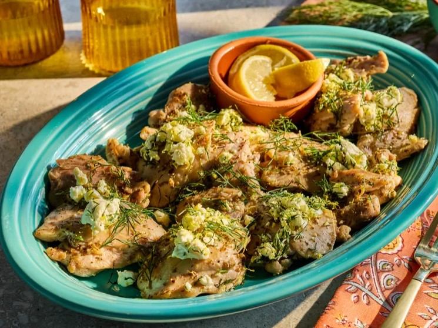

Home
Greek Chicken Thighs

Description:
These Greek chicken thighs are pan-fried in olive oil and flavored with garlic, oregano, and lemon.
The chicken comes out juicy and tasty—a quick and easy weeknight dinner.
Ingredients:
- 2 tablespoons extra virgin olive oil
- 1 ½ pounds skinless, boneless chicken thighs
- 1/2 teaspoon freshly ground black pepper
- 1/4 teaspoon salt
- 4 cloves garlic, sliced
- 1 lemon, zested and juiced
- 2 teaspoons dried oregano
- 1 tablespoon chopped fresh dill or parsley
- 1/4 cup crumbled feta cheese (optional)
Steps:
- Gather all ingredients.
- Heat oil in an extra-large skillet over medium heat. Add garlic and cook until fragrant and lightly browned, about 2 minutes.
Remove garlic from the skillet with a slotted spoon; discard.
- Season chicken with salt and pepper. Add chicken to the skillet. Cook chicken until browned, turning once, about 16 minutes.
- Add lemon juice to the skillet and season chicken with oregano. Turn chicken to coat. Continue cooking until lemon juice
reduces, and chicken is 175 degrees F (80 degrees C) when tested with an instant-read thermometer, about 1 minute. Remove from heat.
- In a small bowl, toss together dill and lemon zest. Stir in feta, if using.
- Sprinkle herb-feta mixture over chicken and serve.
note:
This recipe was taken from AllRecipes
Back to Recipes